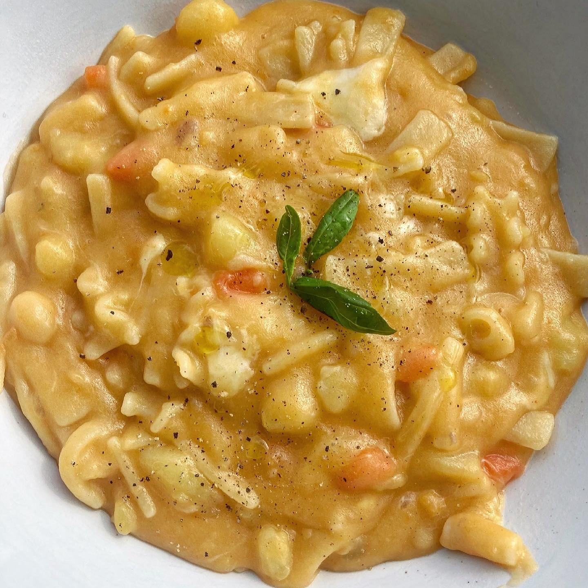

Pasta e patate

If you’re not yet familiar with Neapolitan-style pasta and potatoes, you’re about to experience a whole new world!
What we have here is a dish of humble origins. Pasta and potatoes came about as a result of the need for hearty and comforting one-pot dishes that first and foremost contained lots of carbohydrates, courtesy of the two main ingredients.
Keen to find out how to make this wonderful Neapolitan-style pasta and potatoes yourself?
Ingredients
- Mixed pasta
- Potatoes
- Celery
- Carrots
- Onions
- Lard (pork's fat)
- Tomato paste
- Parmigiano Reggiano cheese
- Olive oil
- Seasonings
Steps
- Chop celery, carrot, onion, potatoes and lard.
- Heat oil and add the lard to make it melt.
- Add chopped onion, carrots and celery. After a few minutes add potatoes
- Add tomato paste, 2 cups of water and seasoning.
- Cook at low heat for 30 minutes. Add water if needed.
- Put pasta, add a cup of water and make it boil.
- Serve the pasta!